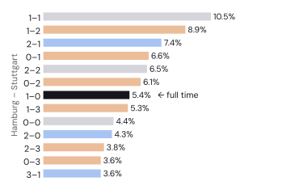
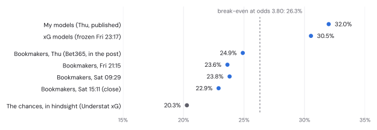

MATCHDAY 6 · FORECAST & FULL-TIME REVIEW
Hamburg vs Stuttgart: my models pick a fight with the bookies.
Both clubs have six points from five games. My models make this close to a coin toss with a draw attached. The bookmakers make Stuttgart clear favourites. Last week the models won that argument. Five seasons of data say they usually lose it.
The short version
1.47 – 1.77 Most likely score 1–1 (10.5%) 63% 64%
Stuttgart are favourites, but only just in my numbers: 44% against 32% for Hamburg, with the draw at 24%. The are firmer, at 53% for Stuttgart. That of 8 percentage points is the most interesting thing about this match, so a good part of this post is about who to believe.
Spoiler: probably the bookmakers. When my models have been this much less sure of a favourite than the market, the favourite won 56% of the time. The models had said 48% and the bookmakers 58%.
Six points each, by very different routes
| 2026/27, matchdays 1–5 | Hamburg | Stuttgart |
|---|---|---|
| Points (won–drawn–lost) | 6 (2–0–3) | 6 (2–0–3) |
| Goals for – against | 5 – 15 | 8 – 9 |
| Shots for – against | 53 – 91 | 79 – 96 |
| Shots on target for – against | 19 – 29 | 30 – 30 |
| Opponents’ goals per shot on target | 52% | 30% |
| Points expected from shots on target | 4.8 | 7.3 |
| Last season | 13th, 38 points | 4th, 62 points |
Hamburg collected their points in an unusual order. They lost their first three games 12–0 on aggregate, then beat Köln 2–1 and won 3–2 in Hoffenheim, against a home side that finished with ten men. They have been out-shot in all five games, 91 to 53 in total.
The number that jumps out is at the back. Opponents have scored with 15 of their 29 shots on target against Hamburg, more than half. The Bundesliga average is about one in three. Over five games that is mostly bad luck, plus whatever share belongs to the goalkeeper, and the models expect it to fade.
Stuttgart finished fourth last season and are back in the Champions League, which so far looks like a full-time job. Their league shot numbers are ordinary: out-shot 96 to 79, level on shots on target at 30 each. The 5–1 at Bayern on the opening night did a lot of that damage, but not all of it.
Count every shot on target as a one-in-three chance of a goal, work out the odds of every possible scoreline in each match, and you get the points each side “should” have: their . Stuttgart come out at 7.3, Hamburg at 4.8. Same table position, different stories:

The whole calculation fits in a few lines:
CONV = 0.335 # Bundesliga goals per shot on target, 2023/24 to now
def xpts(sot_for, sot_against):
a = binom.pmf(np.arange(sot_for + 1), sot_for, CONV) # P(0, 1, 2, … goals)
b = binom.pmf(np.arange(sot_against + 1), sot_against, CONV)
M = np.outer(a, b) # every possible scoreline
return 3 * np.tril(M, -1).sum() + np.trace(M) # 3 × P(win) + 1 × P(draw)The calculation treats a tap-in and a speculative 30-yarder the same, so it is a smell test rather than a verdict. Still, it smells like Hamburg have been lucky with results (six points from shots worth 4.8) and unlucky at the back (15 goals conceded from shots worth about 10), while Stuttgart have been a little wasteful in front of goal (8 scored from shots worth about 10).
Three models and an average
Same three models as in last week’s Augsburg vs Bayern forecast, which explains them in more detail. Same equal weights too. Tinkering with the recipe after a 2–2 would be the fastest way to make the backtest meaningless.

How to read this chart
Each row is one forecaster and adds up to 100%: blue for a Hamburg win, grey for the draw, orange for Stuttgart. Compare the Ensemble row, my published forecast, with the Bookmakers row under it.
- is the most Stuttgart-friendly at 49%. It only looks at goals, and over the past year Stuttgart scored a lot more of them: 71 to Hamburg’s 40 last season.
- The Bayesian is the most Hamburg-friendly at 36% for a home win. It expects 4.8 shots on target from Hamburg and 5.6 from Stuttgart, with about a third of each going in. Stuttgart’s ordinary start shows up here, and so does home advantage, which the model puts at 22% more shots on target for the home side.
- lands in between, at 43% for Stuttgart. The between the clubs does most of the work. Stuttgart conceding plenty of shots lifts Hamburg’s expected goals.

How to read this chart
Coloured bars to the right pushed that side’s expected goals up; grey bars to the left pulled them down. ×1.05 means 5% more goals than the model would otherwise expect.
The scoreline

How to read this chart
Hamburg’s goals run up the side, Stuttgart’s along the bottom, and darker cells are likelier. The diagonal (0–0, 1–1, 2–2 …) holds the draws; above it Hamburg win, below it Stuttgart win.
1–1 is the single most likely score at 10.5%, followed by 1–2 (8.9%) and 2–1 (7.4%). A one-goal game either way: 37%. Stuttgart by two or more: 24%. Hamburg by two or more: 15%. Over 2.5 goals (63%) and both teams scoring (64%) come out a little below what the bookmakers’ prices imply (68% and 66%), so on goals, at least, nobody is far apart.

How strong are they, really?
The Bayesian model’s view of both clubs since 2020/21, relative to the average Bundesliga side of each season. The 2. Bundesliga years count too: Hamburg spent five of these seasons there. Shaded bands are 80% .

Stuttgart create about 1.23× the shots on target of an average side, second only to Bayern. Their problem is the other end: they now allow 0.98× the average, where two seasons ago they allowed 8% fewer than average. Hamburg sit at 0.96× and 1.07×: below average on both counts, but not hopelessly, and with wide bands because five games is not much evidence.

How to read this chart
Each dot is a club. Further right means more shots on target created than an average side, higher up means fewer conceded. Top right is where you want to live.
Who wins the argument?
This is the second week running that my models are kinder to the underdog than the bookmakers. Last week it worked: Augsburg drew 2–2 with Bayern and the models beat the market on that match. One match proves nothing, so I went back through the and grouped every match by how much the models and the market disagreed about the favourite.

How to read this chart
Each row is a group of past matches, sorted by how much the models doubted the bookmakers’ favourite. Orange dot: what the models said. Grey dot: the bookmakers. Diamond: what happened. Whichever dot sits nearer the diamond was closer to the truth.
When the models were at least 7 points less sure of the favourite than the market, as they are today (8 points), the favourite won 56% of the time. The models had said 48%, the bookmakers 58%. Those are only 59 matches, so I ran the same check on the two models that I can backtest back to 2022/23, 1,269 matches in all: 51% from the models, 61% from the bookmakers, 66% in reality. It works the other way round too. When the models liked a favourite more than the market did, the market was closer again.
The likely reason is boring. The bookmakers know things my models don’t: line-ups, injuries, and what a Champions League squad is worth on an off day. My models know shots and results. When the two disagree by this much, the gap is usually information the models are missing, not something clever the market overlooked.
I am not changing the published forecast, because changing a forecast after looking at the answer key is how backtests become fiction. But if you want a single number for Stuttgart, the evidence puts it between 44% and 53%, and nearer the second.
Should you trust any of it?
Same test as last week, now with matchday 5 included: every match of 2025/26 and this season replayed as if it were next weekend’s fixture, each model refitted on only what it could have known at the time, and every forecast scored with the (RPS). Lower is better; a know-nothing forecast of one-third for everything scores 0.238.
| Out-of-sample, 351 matches | RPS | Log loss | Top pick correct |
|---|---|---|---|
| Bookmakers | 0.1931 | 0.955 | 55% |
| Ensemble | 0.1957 | 0.966 | 55% |
| Dixon–Coles | 0.1957 | 0.968 | 55% |
| Bayesian | 0.1958 | 0.968 | 54% |
| XGBoost | 0.1986 | 0.973 | 54% |
The ensemble is level with Dixon–Coles, the best of its parts, and ahead of the other two. Averaging hasn’t found extra accuracy over this stretch; what it buys is insurance against any single model’s bad weeks.
The bookmakers are still better, by 0.0026 RPS (95% bootstrap interval −0.0017 to +0.0068). Over the three seasons before that, Dixon–Coles trailed them by 0.0067 a season on average. It is the disagreement chart above, told with one number.
This season, after 45 matches, the ensemble is ahead of the bookmakers (0.2046 against 0.2119). On this blog the running score is one forecast, one win for the models. I am aware of how both of those sound, and of how little they prove.
The shows the same habit. The ensemble’s forecasts between 45% and 60%, the range this match sits in, averaged 51%; those outcomes happened 55% of the time (128 forecasts). The models are a little too timid about favourites.


How to read this chart
Each dot groups forecasts with similar probabilities. On the diagonal, forecasts meant what they said. Above it, things happened more often than forecast, so the models were too timid.
What the models don’t know
- Wednesday night in Bratislava. Stuttgart won 3–0 at Slovan Bratislava in the Champions League on Wednesday and host Atlético Madrid on Tuesday. The XGBoost features count rest days from league games only, so as far as they know, Stuttgart had a quiet week. Some rotation looks likely.
- Team news. Starting11’s reported availability, not a confirmed team sheet, has Hamburg without Daka, El Ouahdi, Vušković, Grønbæk and Rössing-Lelesiit, with Jatta, Poulsen, Remberg, Nadir and Moffi doubtful. Stuttgart are listed without Zagadou, Al Dakhil, Tomás, Nartey and Mittelstädt, with Chabot and Jaquez doubtful. Long lists on both sides; the models see none of it.
- History. Stuttgart beat Hamburg 6–1 on aggregate in the 2023 relegation play-off and 4–0 in April. Hamburg won the meeting in Hamburg last November 2–1, with ten men and two shots on target. Head-to-head records are mostly noise, but that last one deserves a mention for sheer cheek.
Verdict
Stuttgart, probably. My models say 44%, the bookmakers 53%, and the track record says lean towards the bookmakers. The most likely single score is 1–1, the one result that lets both clubs tell themselves everything is fine. If Hamburg win, my models will be unbearable. If Stuttgart win comfortably, next week’s post gets a section called “Who wins the argument, part two”.
Full time: how did the forecast do?
Hamburg 1–0 Stuttgart. For most of the afternoon it looked like the bookmakers’ match. Stuttgart had almost all of the ball early on, Deniz Undav hit the post just before half-time, and Daniel Heuer Fernandes saved from Ermedin Demirović and, after the break, from Undav again. Hamburg’s reply was Yussuf Poulsen hitting the post and then the bar early in the second half. Then, in the 88th minute, Miro Muheim hit one from about 25 metres. After three defeats by 12–0 on aggregate, Hamburg have now won three in a row, and this was their first clean sheet of the season.

| Forecast | Full time | |
|---|---|---|
| Result | Hamburg 32% · draw 24% · Stuttgart 44% | Hamburg win |
| Goals | 1.47 – 1.77 expected | 1 – 0 |
| Chances, in (Understat) | – | 1.67 – 2.64 |
| Exact score 1–0 | 5.4%, seventh most likely | Yes |
| Over 2.5 goals | 63% | No |
| Both teams score | 64% | No |
| A one-goal game | 37% | Yes |
Scored on probabilities, the models win again. The is 0.328 for the ensemble and 0.420 for the bookmakers (lower is better). Every model beat the market here, because every model gave Hamburg more than the market’s 25%. The Bayesian model, the keenest on Hamburg at 36%, did best (0.293). Dixon–Coles, the keenest on Stuttgart, did worst of the three (0.379). That is two graded posts in a row in which the models were closer.
Who wins the argument? Depends what you count
The pre-match post asked whether to believe the models or the bookmakers, and leant towards the bookmakers. The scoreboard says the models. The chances say otherwise. Understat has Stuttgart creating 2.64 expected goals to Hamburg’s 1.67, and turns those chances into Stuttgart 60%, draw 20%, Hamburg 20%. That is closer to the bookmakers’ 53% than to my 44%.
Last week was the same story. Augsburg drew 2–2 with Bayern and the models won on the scoreboard, but Bayern’s chances were worth 4.58 goals to Augsburg’s 1.96: an 88% Bayern win by Understat’s count, nearer the market’s 81% than the models’ 72%. Two weeks, two wins for the models on the result and two for the bookmakers on the chances. The result is what gets graded, but the chances are what next week’s forecast learns from.
The first paper bet: won the money, lost the price
The Track record page places an imaginary €1 whenever the ensemble rates an outcome at least 5 points higher than the bookmakers do. Augsburg missed that bar by a tenth of a point, so this was the first: €1 on Hamburg at 3.80 (models 32%, market 25%). It won €2.80.
Profit on one bet says almost nothing. The better early test is : the odds you took, times the market’s probability at kick-off with the margin removed, minus one. Positive means you got a better price than the market settled on; over hundreds of bets it predicts profit long before the profit shows up. My odds recorder took the closing prices of 20 bookmakers 19 minutes before kick-off. They gave Hamburg 22.9%, so 3.80 × 0.229 − 1 = −13%. In plain terms, the ticket was worth about 87 cents when the match started.

Two things went wrong with the price. The market moved away from Hamburg all week, from 24.9% on Thursday to 22.9% at kick-off. And 3.80 was a stingy quote to begin with: on Friday evening the average was 4.00 and Tipico paid 4.20; at kick-off Tipico paid 4.30 and Pinnacle 4.47. The models’ 32% says the bet was good. The market, the price and the chances all say the models were too keen on Hamburg and got lucky. One bet settles nothing. The Track record page keeps count, and adds the official closing-line figure, based on football-data.co.uk’s closing average, once those files update early next week.
Both grades fit in a few lines. The full script, chart included, is analysis/tools/fulltime.py.
def rps(p, outcome): # p = [home, draw, away]; outcome 0, 1 or 2
cum = np.cumsum(p)[:2]
hit = np.array([outcome == 0, outcome <= 1], float)
return ((cum - hit) ** 2).sum() / 2
rps([0.32, 0.24, 0.44], 0) # models 0.328
rps([0.249, 0.225, 0.526], 0) # bookmakers 0.420
def clv(odds_taken, closing_prob): # closing_prob: margin removed
return odds_taken * closing_prob - 1
clv(3.80, 0.229) # -0.13Friday night’s upgrade
The models switched to their xG versions on Friday night, after this post went out. Before kick-off I froze and published what they would have said: Hamburg 30.5%, draw 23.2%, Stuttgart 46.3%. That is a little closer to the market, so a little worse on this result (RPS 0.348 against 0.328). One match, in the wrong direction for the upgrade, which is exactly why it was tested on 2,187 matches rather than on this one. The xG versions are the published models from now on; the Bayern v Leipzig forecast already uses them.
Before the match I promised that if Hamburg won, my models would be unbearable. They are. They were also backing the side with the worse chances, at a worse price than the market, and needed a 25-metre shot in the 88th minute. “Who wins the argument, part two” stays in the drawer for now. It will be back.
Run it yourself
The whole analysis, from data download to the last chart, runs in one notebook. Choose a GPU runtime: the Bayesian model’s chains run on the GPU through JAX, and XGBoost trains with CUDA. New this week: the fixture lives in a small match.json, so you can point the notebook at any Bundesliga match by changing two team names, a date and the odds.
It pins the data to the same snapshot, so you should land within about a percentage point of the numbers here (MCMC is random, and GPUs do arithmetic in a slightly different order).
The full-time grades and the two full-time charts come from analysis/tools/fulltime.py, which reads the forecast as published (published_forecast.json) and writes fulltime.json. The frozen xG forecast comes from analysis/pipeline/forecast.py.
Data and sources
Results, shots, shots on target, red cards and bookmaker closing odds: football-data.co.uk, via the xgabora/Club-Football-Match-Data GitHub mirror (2005/06 to matchday 1) and football-data.co.uk directly for matchdays 2–5. Matchday 5 results cross-checked against the Sportradar match centre, which is also the source for Stuttgart’s Champions League results. Odds for this match: Bet365 (3.80 / 4.20 / 1.80), as quoted by KickOff on 15 October. Team news: Starting11; it was not used by the models. 2023 play-off: web.de. Full time: match reports from hsv.de and Bulinews; xG and xG-based result probabilities from Understat; odds during the week from my own recorder (The Odds API, about 20 bookmakers). Method references: Dixon & Coles (1997), Modelling association football scores and inefficiencies in the football betting market; Hoffman & Gelman (2014), The No-U-Turn Sampler.